Introduction
In the current landscape of Generative Artificial Intelligence (GenAI), new architectures and methodologies emerge with remarkable frequency. According to recent statistics from arXiv, the volume of papers tagged under LLM averages nine submissions daily. To comprehend these advancements fully, it is essential to delve into the seminal work that laid the groundwork for many contemporary developments in Natural Language Processing (NLP): the paper entitled “Attention Is All You Need”. This pivotal research introduced Transformer models to the NLP domain, which have since become fundamental frameworks underpinning a myriad of advanced language models such as GPT, Llama, Claude, among others. Furthermore, the paper introduced innovative concepts like Multi-Head attention and Positional Encoding, which serve as cornerstone elements in the construction of modern AI architectures.
According to the structure proposed for this blog, the initial focus will be on evaluating the limitations inherent in current methodologies of that time, such as Recurrent Neural Networks (RNNs). Subsequently, attention will shift towards introducing the Transformer architecture. This discussion will meticulously dissect both the Encoder and Decoder components of the Transformer architecture, elucidating the specific functionalities of each constituent part that collectively contribute to its robust framework.
RNNs and their problems
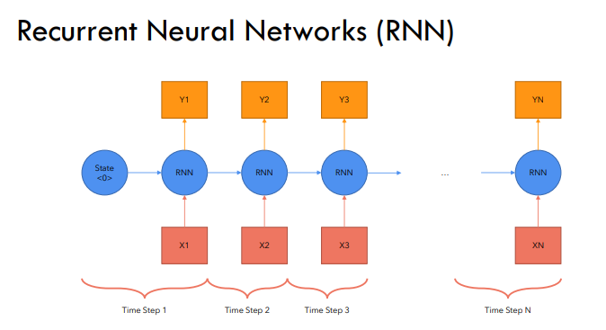
To commence, we will first explore the operational principles of Recurrent Neural Networks (RNNs). While this discussion does not aim to provide an exhaustive tutorial on RNNs, a basic overview with a simplified diagram will be presented to illustrate their fundamental workings and inherent challenges.
RNNs are designed to sequentially map input x to output y, either in a recurrent or sequence-to-sequence manner. Their operation can be summarized as follows:
- They are employed to establish a mapping from x to y.
- For a sequence comprising n tokens, the computation unfolds across n sequential steps.
- The process initiates with an initial or zeroth stage, where the first input token, denoted as \(x_1\), is fed into the initial RNN cell alongside the preceding hidden state (typically denoted as state zero in our case for first token), resulting in the production of the first output token \(y_1\).
- This iterative process continues: \(h_1\) and \(x_2\) become inputs to the second cell, yielding \(y_2\) and \(h_2\), and so forth, until all tokens have been processed.
- Consequently, each RNN cell operates with two inputs: \(x_i\) (current token) and \(h_{i-1}\) (hidden state from the previous computation).
Problems
- Slow computation for long sequences:
- Since it is a sequential model, and each word depends on the words before it, the computation can become really slow in case of longer text sequences.
- Vanishing and Exploding Gradients:
- The longer the chain becomes, the more will be the chances of vanishing/exploding gradients (cause of chain rule) which is not desirable as it slows down in training and also in some cases might not be able to be represented by the system (consider int32, float32, etc)
- Difficulty in accessing information from long ago
- The first few tokens will have very less or almost negligible impact on the last tokens (loss of context). This is undersirable as can be seen in the case of RNNs that their attention span or context window is much smaller and they suffer with longer text sequences.
Transformer for the rescue
Addressing the challenges highlighted by RNNs, particularly their limitations with longer sequences, Vishwani (https://arxiv.org/search/cs?searchtype=author&query=Vaswani,+A) and his team introduced the Transformer architecture in 2017, which effectively mitigated these issues. Unlike RNNs, Transformers streamline computation by executing a single forward pass for processing an input sentence, eliminating the need for multiple sequential passes. Furthermore, Transformers leverage a broader context window and circumvent context loss through sophisticated mechanisms such as positional encoding and attention.
The Transformer architecture comprises two pivotal components: the encoder and the decoder. This blog will commence by exploring the functionalities of the encoder, followed by an in-depth examination of the decoder. Ultimately, we will synthesize these components to elucidate how they synergistically contribute to the comprehensive Transformer model.
Encoder
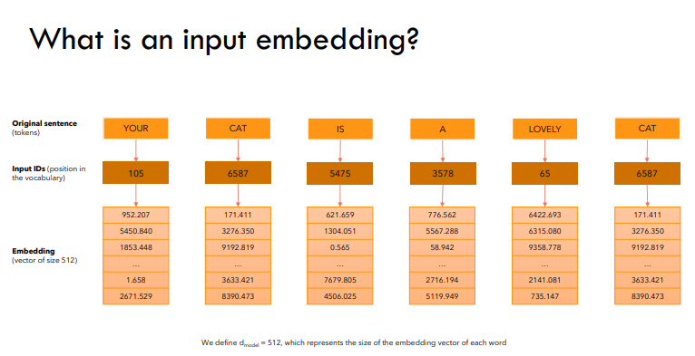
To understand how an encoder works, let us first consider an input sentence, Your cat is a lovely cat.
Step 1: Input Embeddings
- The initial step involves generating
Input Embeddingsfor the given sentence. - This process begins with
tokenization, where the sentence is segmented into individual words. - Subsequently, each token is assigned a unique numerical identifier corresponding to its position within the vocabulary, as depicted in the accompanying figure.
- Notably, the input ID for “cat” remains consistent across its occurrences in the sentence.
| Original Sentence Token | Input ID (vocabulary position) |
|---|---|
| Your | 105 |
| cat | 6587 |
| is | 5475 |
| a | 3578 |
| lovely | 65 |
| cat | 6578 |
- These input IDs are then transformed into embeddings of a fixed size, typically 512 in dimension.
- Importantly, these
embeddingsserve as trainable parameters and are subject to adjustment during training to optimize the model’s loss function. - Furthermore, we define \(d_{model} = 512\), representing the dimensionality of each word’s embedding vector.
- Importantly, these
Step 2. Positional Embeddings
- Once we obtain the
input embeddings, our objective is for each word to encapsulate itsspatial encodingwithin the sentence—essentially ensuring that each word is aware of its positional information. - We aim for the model to perceive words appearing close together as
proximateand those appearing farther apart asdistant. - The
positional encodingshould therefore embody a pattern that the model can assimilate. (But how?)
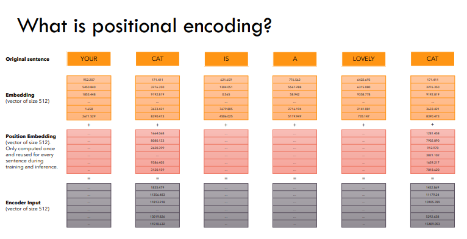
- Referring to the figure above, we observe that PE (positional encoding) augments the input embedding of each word, thus forming our encoder input.
- Here, PE is a fixed-size vector of 512 dimensions, computed once and utilized consistently across all sentences during both training and inference.
- This identical PE can be applied across different sentences, serving purely as a positional marker and hence is neither learned nor unique to individual sentences.
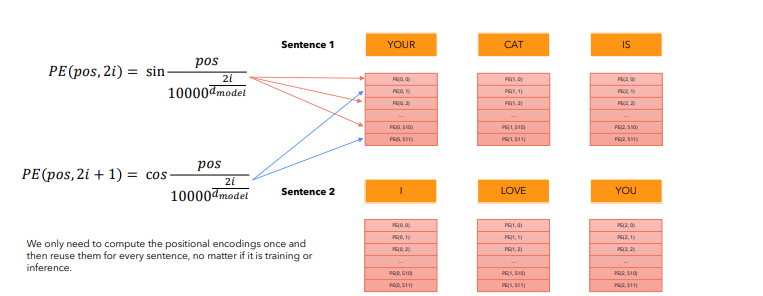
-
But how is positional encoding computed?
- In their paper, the authors employ a formula involving \(sin - cos\) functions to generate alternating values across dimensions, resulting in vectors of length \(d_{model}\).
- In the paper, the authors use a \(sin - cos\) formula for alternating words and then create vectors of length \(d_{model}\).
- But why restrict to trigonometric functions? Why not consider alternatives?
- Trigonometric functions like sine and cosine inherently depict a pattern that the model can recognize as
continuous, facilitating the model’s ability to discern relative positions. The regularity of these functions in their plots suggests a predictable pattern, which leads us to hypothesize that the model will perceive and leverage these patterns effectively.
- Trigonometric functions like sine and cosine inherently depict a pattern that the model can recognize as
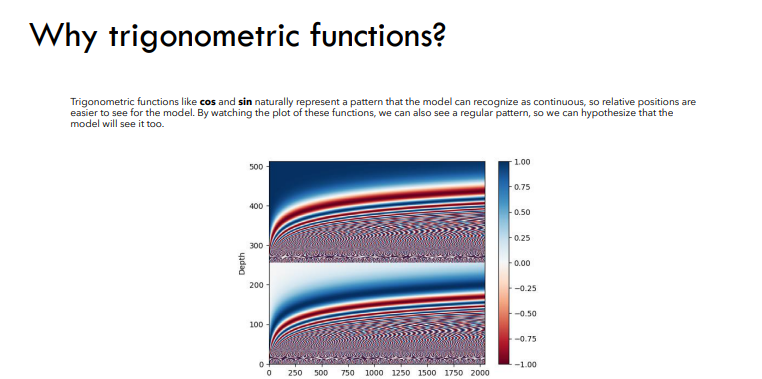
Step 3. Self attention (with a single head)
- Self-attention has been a concept predating the seminal attention paper. The authors introduced the concept of
multi-head attention, which we will delve into later. However, to grasp that, it is essential first to comprehend howsingle-head attentionoperates. - Self-attention enables the model to establish relationships between words.
- Input Embeddings: Capture the semantic meaning of each word.
- Positional Encoding: Provide positional information within the sentence.
- Self Attention: Facilitate relationships between these words.
Therefore, it is through self-attention that words are able to effectively capture contextual nuances and their interdependencies with other words.
\[\text{Attention}(Q, K, V) = \text{softmax}\left(\frac{QK^\top}{\sqrt{d_{model}}}\right) V\]
In the provided formula, Q, K, and V represent the input sentence embeddings (after positional encoding), each of size ((6, 512)\), where \(\text{seq_len} = 6\) and \(d_{model} = 512\).
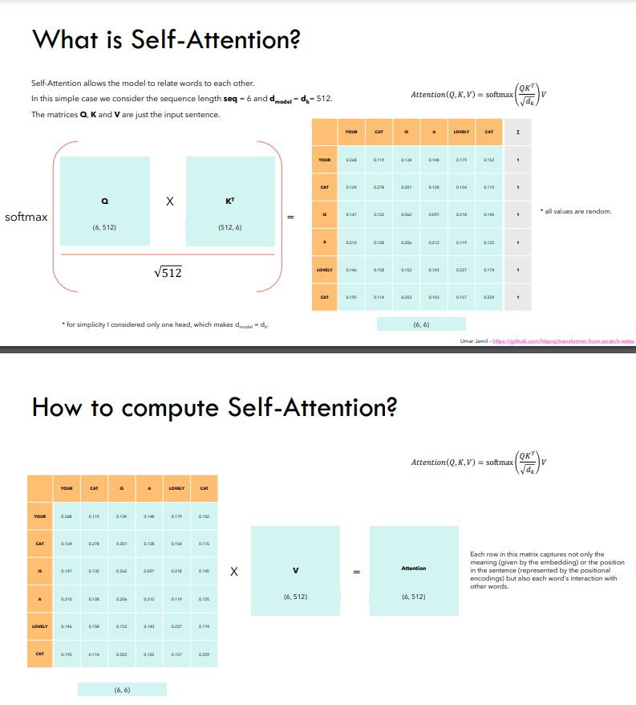
Each row in this resultant attention matrix not only encapsulates the meaning (via embeddings) and positional information (via PE) but also signifies the interactions and relationships between individual words.
Some properties of Self-attention:
- Self-attention exhibits
permutation invariance:- This property ensures that rearranging the order of words does not alter the computed values. This characteristic is highly desirable.
- In this illustration, swapping the positions of \(B\) and \(C\) does not change the values computed for \(B’\) and \(C’\); it merely repositions them in the matrix.
- As of now, self-attention requires no additional parameters (though this changes with multi-head attention).
- Values along the diagonal are expected to be the highest, reflecting each word’s strongest relationship with itself.
- To prevent certain positions from interacting, their values can be set to \(-\infty\) before applying the softmax operation. This ensures that the model does not learn interactions involving those positions (since \(e^{-\infty} = 0\)). This property is particularly useful in decoder settings.
Step 4: Multi-Head Attention
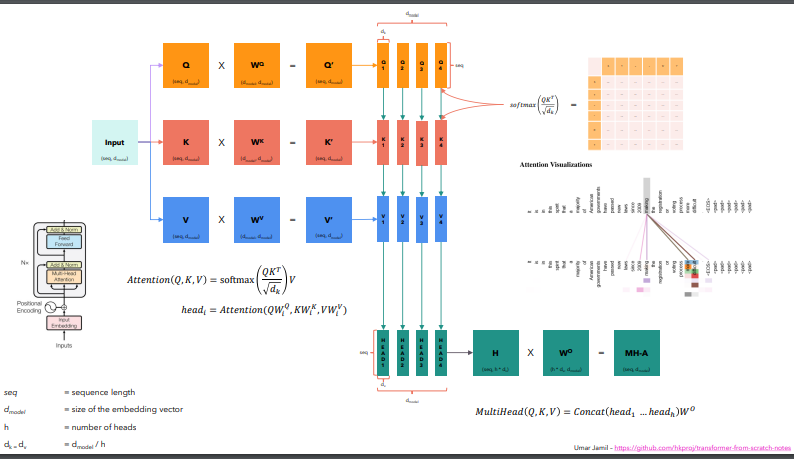
- Initially, three copies of the input embeddings are created: \(Q, K, V\), akin to single-head attention.
- These \(Q, K, , V\) undergo multiplication by parameterized matrices \(W^q, W^k, W^v\) to yield \(Q’, K’, V’\).
- \(Q’, K’, V’\) are subsequently divided into multiple heads, following which attention is independently computed for each head using the standard procedure: \[\text{Attention}(Q, K, V) = \text{softmax}\left(\frac{QK^\top}{\sqrt{d_{k}}}\right) V\] \[\text{and } head_i = Attention(QW_i^q, KW_i^k, VW_i^v)\]
- These individual heads are then concatenated to form the \(H\) matrix, which is subsequently multiplied by \(W^o\) to produce the final output:
\[\text{Multihead}(Q, K, V) = \text{concat}(head_1, head_2, …. head_h)W^o\]
- But why split into multiple heads?
- Each \(head_i\) processes the entire sentence but focuses on a
distinct aspectof the word embeddings. - This approach allows each head to specialize in different semantic aspects of the same word. For example, in Chinese, a word can function as a noun, verb, or adverb depending on context. By employing multiple heads, the model can capture these diverse possibilities.
- This structured approach of multi-head attention enables the model to effectively capture and leverage various semantic nuances and syntactic structures within the input data.
- Each \(head_i\) processes the entire sentence but focuses on a
- Why Q, K and V and not something else?
- This choice follows the convention used in Python dictionaries for keys (K), values (V), and queries (Q).
- But why split into multiple heads?
Step 5: Add and Norm
- Before delving into the add and norm layer, it is essential to understand layer normalization.
- Let’s consider a batch containing three items: 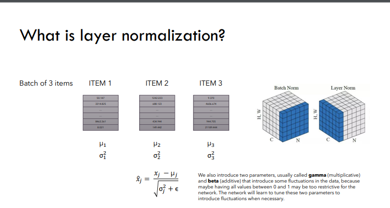
- WFor each item in the batch, we compute the mean \(\mu_i\) and variance \(\sigma^2_i\) separately. Each value \(x_i\) in the item is then transformed using the following formula: \[x_i = \gamma \frac{x - \mu_i}{\sqrt{\sigma^2_i + \epsilon}} + \beta\]
- Introducing two additional parameters, \(\gamma\) and \(\beta\), serves to introduce variability or adjustments into the data. This step is crucial because strictly confining all values between 0 and 1 may overly constrain the model.
- The network learns to adjust these parameters \(\gamma\) and \(\beta\) as needed to accommodate variations in the data where appropriate.
This approach of layer normalization ensures that the model can effectively handle varying scales and distributions within the data, promoting stable and efficient training processes.
Decoder
- In the case of the decoder, similar to the encoder, we start with
output embeddingsanalogous to input embeddings in the encoder, andpositional embeddingssimilar to PE in the encoder. - Next, instead of the regular multi-head attention in the encoder, we employ
MASKED multi-head attentionandcross-attentionfollowed by an add and norm layer. - The \(K, V\) inputs are derived from the encoder output, whereas the \(Q\) input originates from the decoder. This setup transforms the self-attention block into a
cross-attention block, where the decoder’s focus extends beyond its own input to encompass information from the encoder.
Step 1: Masked Multi-Head Attention
- The primary objective is to ensure the model’s
causality, meaning that the output at any given position can only depend on preceding words. (How?) - To enforce this restriction of not allowing the model to see future words, we replace all future positions with \(-\infty\), as previously discussed.
| Your | Cat | Is | A | Lovely | Cat | |
|---|---|---|---|---|---|---|
| Your | \(-\infty\) | \(-\infty\) | \(-\infty\) | \(-\infty\) | \(-\infty\) | |
| Cat | \(-\infty\) | \(-\infty\) | \(-\infty\) | \(-\infty\) | ||
| Is | \(-\infty\) | \(-\infty\) | \(-\infty\) | |||
| A | \(-\infty\) | \(-\infty\) | ||||
| Lovely | \(-\infty\) | |||||
| Cat |
When we apply softmax on this masked attention matrix, the relations between words denoted by \(-\infty\) effectively become zero. This masking mechanism ensures that the model does not attend to future words.
- The remaining components resemble those in the encoder, including a
cross-attention block— which uses two inputs from the encoder output and one from the decoder output—and an add and norm layer. This block functions similarly to a self-attention block in the encoder, fostering interaction between encoder and decoder outputs to enhance sequence generation.
Training the model
- We will consider a translation task, akin to the approach outlined in the referenced paper.
- For instance, translating
I love you very much (en)toTi Amo Molto (it). 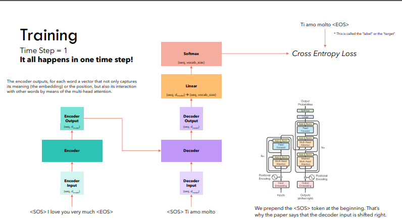 - Special tokens, notably \([SOS]\) (Start of Sentence) and \([EOS]\) (End of Sentence), are incorporated into our sentences.
- Subsequently, we compute the
input embeddingsandpositional encodings` for both the encoder and the decoder. - The encoder provides key \((K)\) and value \((V)\) vectors, which are utilized in conjunction with the masked query \((Q)\) from the decoder to generate decoder outputs.
- These outputs undergo transformation through a
linear layerto map them into our vocabulary space. - The resultant logits are subjected to a softmax operation to derive word predictions.
- The model’s predictions are evaluated against the actual labels using the
cross entropyloss function to adjust the model weights.
- All these operations are performed within a single time step, exemplifying the efficiency achieved in processing sequences in one pass.
Inferencing the model
For inferring from the model, we follow a sequence of steps over four distinct time steps, as detailed below:
Time Step 1
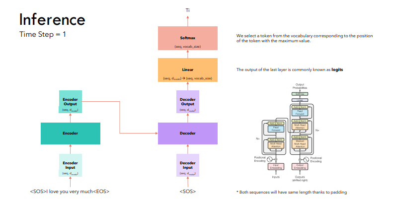
- Initiate with the \([SOS]\) token and compute logits using the decoder model.
2.Apply softmax to these logits to predict the next word, which in this case is
Ti. \[[SOS] \to Ti\]
Time Step 2
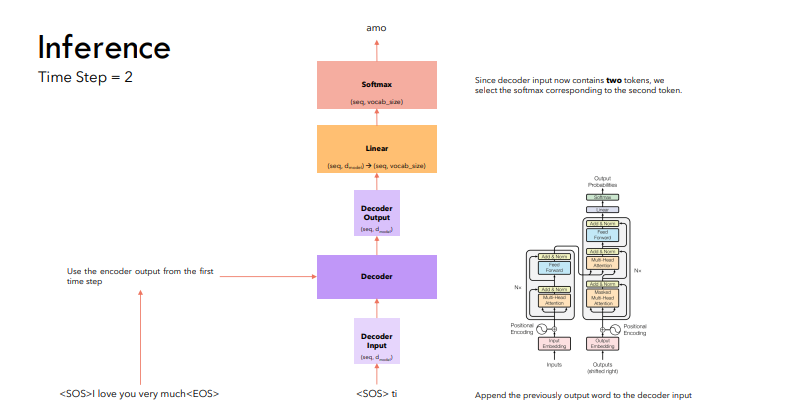
- The encoder computation remains unchanged as the English sentence remains the same.
- Proceed from the current state where \([SOS]\ Ti\) was generated to predict
Amo. \[[SOS]\ Ti \to Amo\]
Time Step 3
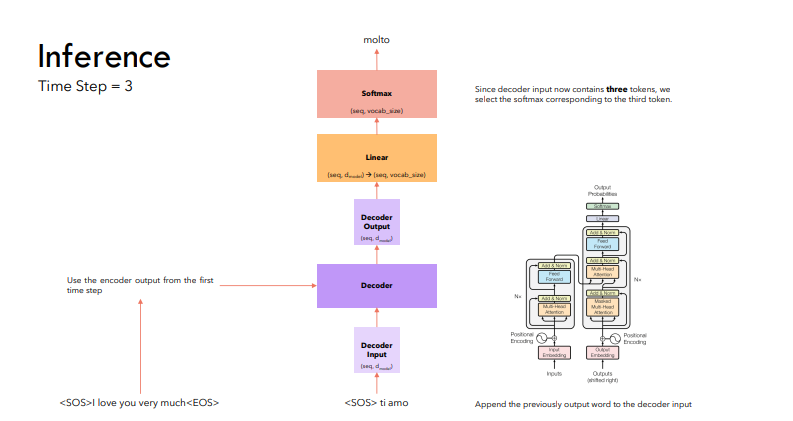
- Continue the sequence from \([SOS]\ Ti\ Amo\) to predict
Molto. \[[SOS]\ Ti\ Amo \to Molto\]
Time Step 4
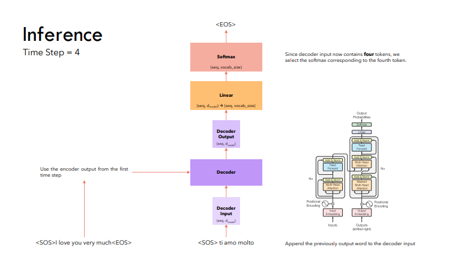
- Conclude the sequence with \([SOS]\ Ti\ Amo\ Molto\) resulting in the
[EOS]token. \[[SOS]\ Ti\ Amo\ Molto \to [EOS]\]
- Thus, the process involves generating tokens sequentially until the
[EOS]token is generated, completing the inference process.
Inference Strategy
- At each stage, our approach involved selecting the word with the highest probability or softmax value. This method is commonly known as
greedy decoding, although it is often associated with suboptimal performance. - Alternatively, a more effective strategy entails considering the top K words and evaluating all potential subsequent words for each of them at every stage. This method, referred to as
Beam Search, typically yields superior results by maintaining the top K most probable sequences throughout the process.
References:
- Attention Is All You Need
- Coding a Transformer from scratch on PyTorch, with full explanation, training and inference.
- Attention is all you need (Transformer) - Model explanation (including math), Inference and Training
- Transformers from scratch notes by Umar Jamil used for figures in this blog.
Appendix
Photo by Attention Is All You Need